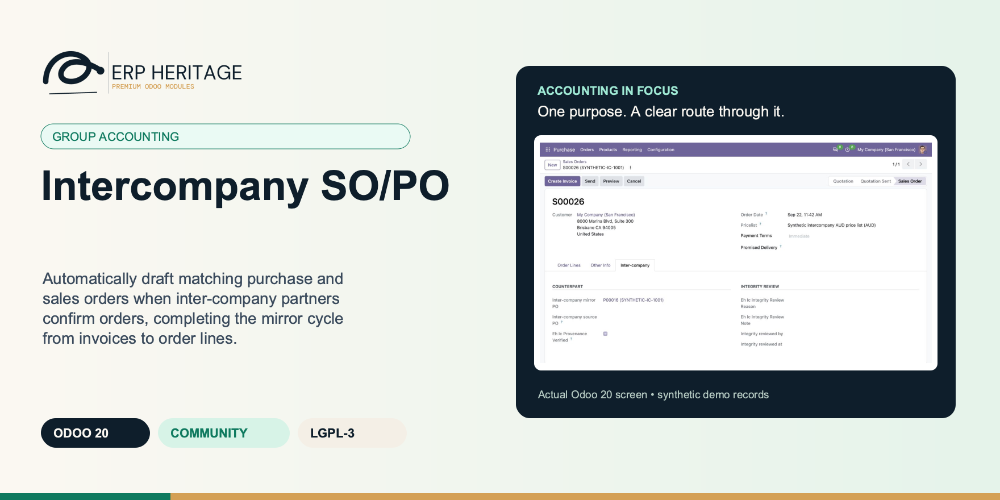
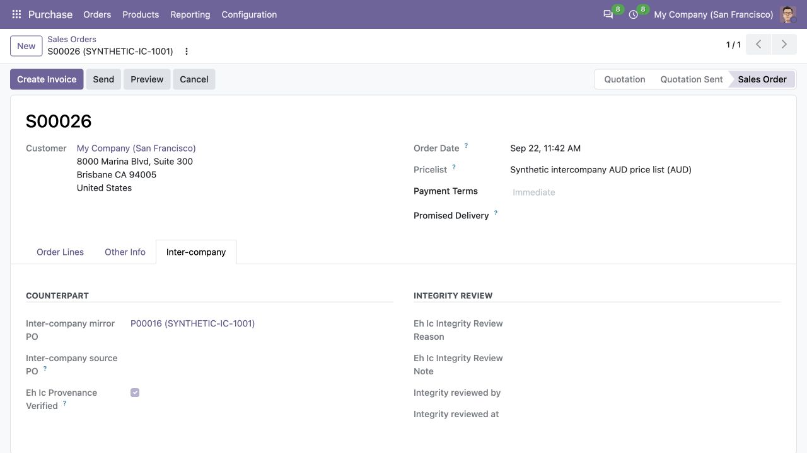
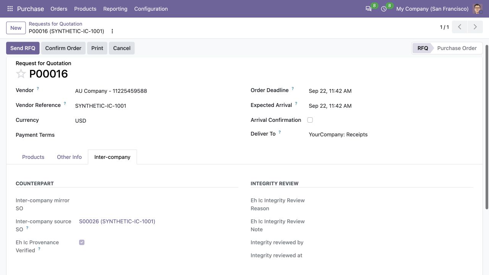
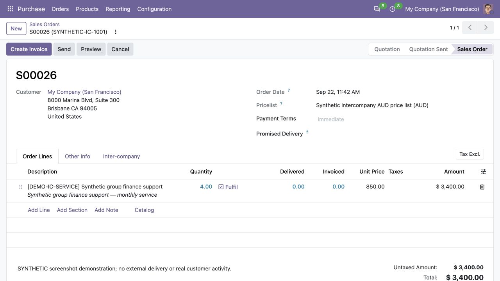

ERP HERITAGE / ODOO 20 COMMUNITY
Automatically draft matching purchase and sales orders when inter-company partners confirm orders, completing the mirror cycle from invoices to order lines.
LGPL-3 · Odoo 20 · v20.0.1.1.4 · Module guide, setup, workflows and rollout checks
The purpose
Extends the ERP Heritage inter-company engine from invoice and move mirroring to sales and purchase orders, completing the multi-company order cycle.
Inside Odoo 20
Captured from Odoo 20 Community using synthetic demonstration records. Configuration screens show the available workflow; external service connectivity still requires the relevant provider setup and validation.

Confirmed synthetic sales order links to the generated draft purchase order through the intercompany integration.
Captured 2026-09-22 from isolated Odoo 20 Community database with synthetic demonstration records. No external submission or live banking activity is represented.

Draft receiving-company purchase order references the source sales order and displays intercompany provenance.
Captured 2026-09-22 from isolated Odoo 20 Community database with synthetic demonstration records. No external submission or live banking activity is represented.

Source sales-order lines show the synthetic shared-service quantity, price and amount before delivery or invoicing.
Captured 2026-09-22 from isolated Odoo 20 Community database with synthetic demonstration records. No external submission or live banking activity is represented.
Inside this module
Confirming an order in one company automatically drafts the mirror in the partner company, eliminating duplicate data entry and synchronization delays.
The receiving company inspects the draft counterpart and accepts it by confirmation. Product, quantity, price and taxes remain sealed to the source; corrections cancel and replace the source transaction.
Extends inter-company automation beyond invoices to include SO and PO, so mirror orders and mirror invoices stay aligned across the trade cycle.
A mirror is never mirrored back. If SO A -> PO B is created and then PO B is confirmed, the reciprocal provenance flag prevents another SO.
External partners and same-company contacts never trigger a mirror because only the manager-owned Represented Company route is authoritative.
Down payments, expense re-invoicing and verified receipt adjustments carry server-owned markers and stay outside the sealed original trade scope.
No enabled route means no mirror and normal source confirmation. A configured source-only route without an accountable target service user fails closed.
The configured service user is restricted to the target company. Elevated fallback is limited to callers that already own target-company scope.
From input to outcome
Verify the underlying intercompany configuration and the destination company’s product and tax resolution. Gather company relationships, orders, products, taxes, delivery destination, service-user access and source references. Use a representative case with a known expected result so the team can separate configuration decisions from unexpected behaviour. Keep the supporting commercial or accounting evidence available during review.
Confirm the supported source sales or purchase order and inspect the linked draft counterpart. Follow the record’s available actions in the order intended by the workflow. Review the selected company, relevant dates and any validation messages before continuing. If the source data changes, reassess the result against the updated evidence.
Company A confirms a $50k SO to sister Company B. The module drafts a sealed PO in Company B with the mapped destination SKU, destination taxes and preserved untaxed trade value. Company B inspects and confirms the counterpart. When Company A creates the customer invoice from the source SO, the parent Inter-Company Rules engine creates the linked vendor bill in Company B and retains the source invoice as origin evidence. No manual PO creation and one reciprocal audit trail.
Check quantities, unrounded commercial values, dates and fulfilment information before proceeding with the destination workflow. Compare the outcome with the expected treatment for this case and record the reason for any difference that requires follow-up. Give exceptions an owner so they do not disappear inside a period-end spreadsheet.
Use the controlled correction path when paired commercial terms change; the bridge is designed around linked orders and their permitted follow-on actions. Include the accepted operating example, configuration choices and unresolved dependencies in the handover. Review them when business policy, source data or the surrounding Odoo applications change.
Business situations
Intercompany SO/PO is relevant to multi-company sales, procurement and finance teams who need to answer this question: Can a confirmed order produce an inspectable counterpart with coherent commercial terms in the sister company? Start with the process that creates the decision, identify its owner and agree what evidence the reviewer needs. A narrow pilot helps the team evaluate the supported workflow using its own accounting data before broadening access.
Use the module’s group accounting role as one part of a controlled close. Bring the relevant company relationships, orders, products, taxes, delivery destination, service-user access and source references to the review, then explain the result alongside the business event it represents. Establish which outputs become part of the reporting pack and which outstanding matters need a separate accounting decision.
Turn the business question into an acceptance case: Can a confirmed order produce an inspectable counterpart with coherent commercial terms in the sister company? Use one ordinary example and one relevant exception from the supported scope below. Ask the intended operator to prepare it and the reviewer to explain the result. Retain that accepted example with the deployment notes so future changes can be assessed against an understood process.
Before the first result
Confirm that the organisation needs the supported group accounting process described here. Identify the responsible multi-company sales, procurement and finance teams and write down the decision they expect the module to support. Use the limitations section to separate shipped behaviour from an integration, professional judgement or operational service that needs another owner.
Prepare company relationships, orders, products, taxes, delivery destination, service-user access and source references. Check the relevant records in the intended company and use dates that match the business event. Resolve missing accounting configuration before evaluating calculated output; plausible-looking totals do not establish that the chosen inputs or policies are correct.
This module declares Inter-Company Rules as part of its installation foundation. Its direct standard-Odoo dependencies are sale, purchase, stock dropshipping. Review the actual dependency set in the target database before a rollout, especially where another addon also extends the same accounting models, menus or posting actions.
Define who operates Intercompany SO/PO, who reviews unusual results and who maintains configuration. Run the representative workflow below in a test database using the intended users. Confirm that users can reach the work they own and that the reviewer understands the available evidence before moving the process into live operation.
Workflow reference
When a sales order is confirmed to a customer that represents another company (per inter-company configuration), a draft purchase order is created in that company with the source company as the vendor. Confirming a purchase order to such a supplier creates the matching draft sales order. Dates, references, shipping destination, no-variant attributes and unrounded trade value are carried across; destination products and taxes are resolved under destination-company rules while source tax treatment remains visible as audit evidence. Mirrors land in draft for inspection and acceptance, but the paired commercial lines are sealed against unilateral edits. Corrections require cancelling and replacing the source transaction. Down payments, expense re-invoicing and verified receipt adjustments use narrow server-owned corridors and remain outside the original sealed trade scope.
Mirrors are never mirrored back and are created with the configured inter-company service user. When no user is configured, elevated creation remains available only to actors whose allowed-company scope already includes the target; source-only routes fail closed.
Reuses the inter-company configuration and destination-company resolution from Inter-Company Rules (Represented Company field on partner), so a single setup drives both invoice and order mirroring.
Shared abstract mixin resolving destination company from partner Represented Company, loading inter-company config, and applying configured user context; reused by both SO and PO so logic stays consistent with invoice-mirroring engine.
Extends sales order, adding Inter-company mirror PO and Inter-company source PO fields; overrides Confirm action to call counterpart purchase-order creation which builds draft PO lines and posts confirmation message to source SO chatter.
Extends purchase order, adding Inter-company mirror SO and Inter-company source SO fields; overrides Confirm action to call counterpart sales-order creation which builds draft SO lines and posts confirmation message to source PO chatter.
Illustrative implementation exercise. Company A confirms an order involving Company B under the configured relationship. Inspect the generated draft counterpart in the destination company before further fulfilment. Compare quantities, products, dates, delivery destination, taxes and unrounded commercial values with the source. Identical visible totals do not prove that destination-company configuration was resolved correctly. Try a permitted follow-on operation and review its link to the paired commercial scope. Where terms must change, follow the supported cancellation and replacement process rather than editing one sealed side independently. Keep sales, procurement and finance aligned on which company owns the next delivery or invoicing action.
Worked implementation guide
Choose two companies and a single representative order with an agreed product, quantity, price, currency and counterparty. Confirm the represented-company relationship and the enabled intercompany configuration before running the order workflow. Follow the generated counterpart using its actual link and compare the commercial details on both sides. Inspect the receiving company’s taxes and fiscal treatment as its accountant would; similar company names or product labels do not establish equivalent configuration. Keep the source and counterpart references with the acceptance example.
After the ordinary case is understood, test a supported change or cancellation in staging and inspect the state left in each company. Record which actions are automatic and which still require the receiving team to review or continue processing. Follow the invoice handoff separately from order creation so the team does not assume that a mirrored order is already a posted accounting entry. Assign an owner for exceptions that cross the company boundary.
Questions before rollout
It is designed for multi-company sales, procurement and finance teams. Its central business question is: Can a confirmed order produce an inspectable counterpart with coherent commercial terms in the sister company? The listing describes the shipped operating scope and the decisions that remain with the organisation. Evaluate it against your own records and review process, rather than treating the module name as a promise to cover every scenario in that accounting area.
Have company relationships, orders, products, taxes, delivery destination, service-user access and source references ready, together with the person who owns the related accounting policy. Verify the underlying intercompany configuration and the destination company’s product and tax resolution. A known example makes it possible to check the result and resolve configuration questions before the process is repeated across more records or companies.
Check quantities, unrounded commercial values, dates and fulfilment information before proceeding with the destination workflow. Keep the relevant source evidence with the output and be explicit about company, date and policy choices. The most useful review asks whether the result follows from the business inputs, not only whether the operation completed without a validation message.
It belongs to the group accounting family. Its declared custom dependency foundation is Inter-Company Rules. Installing the complete suite also brings other operating and specialist modules; using this focused module should be evaluated against its own dependency list and scope. Optional services still need their own configuration and agreement where applicable.
Requires Inter-Company Rules and one enabled destination-company route. A partner with no enabled route confirms normally without a mirror. Use the controlled correction path when paired commercial terms change; the bridge is designed around linked orders and their permitted follow-on actions.
No. Intercompany SO/PO provides the specific records, calculations or workflow described in this listing. The organisation remains responsible for its source information, accounting choices, supporting evidence and review. Where the process uses an estimate, a contract assessment or an external service, appoint the appropriate owner before relying on the output.
Scope and requirements
Requires Inter-Company Rules and one enabled destination-company route. A partner with no enabled route confirms normally without a mirror.
Does not auto-confirm mirrored orders. The receiver can inspect and accept the draft, but cannot rewrite its sealed commercial terms independently.
Source-only operators require an active, target-scoped inter-company service user. Without one the route fails closed; sudo automation is limited to callers that already own target-company scope.
Destination product defaults and fiscal position determine destination taxes. The engine preserves the source untaxed trade value, line discount, and a readable source-tax summary; analytic distributions remain destination-owned.
A company-restricted product requires exactly one compatible shared or target-company SKU with the same internal reference. Ambiguous or missing mappings stop confirmation safely.
Standards references describe the accounting subject addressed by the module. They do not establish certification, statutory filing acceptance or suitability for every jurisdiction. Your finance team owns its assumptions, accounting policies and review.
Installation scope
Odoo installs the following direct dependencies automatically. Additional dependencies can be brought in by those modules. Related modules in the wider catalogue are optional unless they appear in this dependency chain.
Automatic inter-company invoice mirroring for Odoo 20 Community: a posted sale invoice in company A builds the matching purchase bill in company B (and a vendor bill mirrors back to a customer invoice), with duplicate-proof linkage, a review queue, amount-mismatch detection, and an IFRS 10.B86 elimination pair engine that matches posted pairs per period, books receivable/payable and revenue/expense eliminations in a distinct consolidation-only workspace, and derives unrealised profit from source-invoice-specific inventory evidence. Odoo intercompany invoicing, automatic intercompany bill, multi company sale to purchase mirror, sister company invoice automation, group accounting multi entity, intercompany elimination journal, consolidation elimination automation, unrealised profit elimination, cross company invoice automation, Odoo 20 intercompany Community.
Included dependency: eh_account_intercompany. Post a sale in one company and the matching purchase bill is built in the sister company, with a review queue that catches every pair that did not mirror cleanly.
Odoo Community dependency required by this module. Its own dependencies and configuration remain part of the installation scope.
Odoo Community dependency required by this module. Its own dependencies and configuration remain part of the installation scope.
Odoo Community dependency required by this module. Its own dependencies and configuration remain part of the installation scope.
Acceptance guide
The following are recommended rollout checks, not claims of additional built-in features. Apply the checks relevant to this module and retain evidence of your own results.
Select a recent, closed period that your finance team understands well. Keep its approved source documents, ledger totals and existing working papers available. Reproduce that period in a staging database before working on current transactions. A familiar period makes differences visible: you can distinguish an opening balance problem from a configuration choice, a timing difference or a genuine defect. Agree which person owns each discrepancy and what evidence will close it. Successful installation is the starting point; a repeatable business outcome is the acceptance criterion.
Write down the output your team needs from this module: a reviewed transaction, an exported file, a reconciled balance, an approved schedule or an operational queue. Identify who prepares it, who reviews it and who relies on it next. Make the scope concrete with one company, one reporting period and a small representative document set. Include an ordinary case and an exception. This keeps the evaluation focused on the business decision instead of the number of available screens, and gives reviewers a consistent way to compare the new workflow with their current process.
Use the Odoo 20 edition of the module and its dependencies together. The manifest defines what Odoo installs automatically; a feature mentioned elsewhere in the wider product family is not automatically included. Review the dependency guide on this page before enabling the complete suite, especially where your deployment also uses Sales, Purchase, Inventory or website components. Confirm that your hosting arrangement accepts custom server modules and their Python requirements. Keep a copy of the installed module versions with your acceptance record so a later update can be checked against the same baseline.
Check the companies, currencies, fiscal periods, journals, accounts and partner records used by your sample. Confirm that account purposes agree with your chart of accounts and that archived records are not being selected inadvertently. Review company-specific settings while the intended company is active. Where a workflow needs bank details, analytic dimensions, product information or payment terms, validate those inputs with their owner. Clean master data reduces repeated exceptions and makes it easier to investigate the exceptions that remain. Keep the preparation list short enough for someone else to repeat it.
Decide which source establishes the opening position before introducing new transactions. Save the source date, company, currency and supporting reconciliation. If a module maintains a schedule or a working-paper balance alongside the ledger, document how that opening amount should tie to the general ledger. Do not use balancing entries to hide a difference during the pilot. Classify the difference, correct its source and rerun the comparison. The resulting trail is useful both for your internal reviewer and for support if an unexpected calculation needs investigation.
Choose named users for preparation, review and administration. Confirm their practical access by signing in as those users in staging, rather than relying on an administrator's view of the menus. A visible menu does not replace model access or record restrictions, and a hidden menu does not by itself prove that data is protected. For your own acceptance check, verify the specific business operations each role needs. If your organization requires separation of duties, include that policy in the rollout criteria and check the actual workflow against it before granting production access.
Run the sample with the intended company selected, then repeat the relevant navigation and search checks as a user assigned to a different company. Record which company owns each source document and each generated result. For users who work across entities, confirm how their allowed-company selection affects totals and available records. Investigate any cross-company difference before it becomes a month-end problem. Group-level work and company-level work have different scopes; use the appropriate module and document the scope on the review evidence instead of assuming one screen represents both.
Include a company-currency case and, where relevant to the module, a foreign-currency case. Check the date used to select exchange rates and keep the rate source available to the reviewer. Add a transaction near a period boundary so the team can see whether document date, accounting date or another business date drives the result. Test decimal precision with a small amount as well as a large one. Record the expected rounding treatment. These checks turn vague differences in totals into questions that can be resolved against your accounting policy.
Choose one result and follow the available links or record references back to the original business document. Compare its company, partner, amount, currency and dates with the expected source. Where the workflow creates a journal entry, inspect the accounts and balancing lines before relying on an aggregate report. Where it exports a file, compare the file's records with the selected batch. Save a small, intelligible evidence set instead of an indiscriminate screenshot archive. A reviewer should be able to explain what happened without needing the original preparer beside them.
If this module creates or updates accounting entries, separate preparation from the decision to post in your operating procedure. Inspect the proposed outcome, resolve missing configuration and confirm the intended period before using a posting action. If the module does not post entries, identify the equivalent commitment point, such as sending a file or approving a review record. Record who is allowed to make that decision. The page describes the module's supported workflow; your team still needs an operating policy that fits its accounting responsibilities and approval structure.
From pilot to production
Use a deliberately incomplete sample in staging: a missing required setting, an unsuitable date or a source document that is not ready for the next step. Observe the actual message and the record state that remains. Correct the input and repeat the operation. Check that the recovered result agrees with the ordinary successful case. For transactions already committed, use the supported correction or reversal workflow rather than editing database records. Your acceptance record should explain how staff recover from mistakes, because that is part of day-to-day usability, not an unusual administrative task.
Repeat an import, calculation, preparation step or button action only where the documented workflow permits it. Confirm whether the expected behavior is a recalculation, a refusal, a new version or reuse of an existing record. Do not infer universal duplicate prevention from one successful test. Record the behavior of the actual operation your team will use and include it in staff guidance. A small, identifiable sample makes duplicate records easy to spot and avoids creating a misleading acceptance result from a large batch with poorly understood contents.
Where accounting dates are involved, inspect your company's lock settings and the role that can change them. Include one sample dated inside a closed period and one in the open period, then observe the supported behavior with normal finance access. Agree how the team will handle late documents and approved corrections. The goal is a clear route for legitimate work that preserves the reason the period was closed. Record the policy alongside the module's workflow so operators know when to stop and involve the person responsible for the close.
If the module produces reports or exchange files, have the intended recipient inspect a sample. For a finance report, check the filters, company, dates, currency, labels and totals. For a bank or service file, use that recipient's own validation or test process before a production submission. Generating a structurally valid file does not establish acceptance by every provider. Keep the exact sample and any recipient feedback with the rollout record. Where no export is provided, agree which supported screen or linked record serves as the handover evidence.
Identify any step that depends on a separately configured provider, connector, credential or commercial service. Confirm the exact adapter and its requirements before scheduling a live demonstration. Some family modules provide deterministic rules or file preparation without a live external connection; their usefulness should be evaluated on that basis. Test a provider failure in staging only when the adapter offers a safe test route. Make it clear who manages credentials and provider subscriptions, and who should be contacted when an external service is unavailable.
Time the operations your staff will actually repeat, using a dataset that resembles your expected company, date range and document volume. Record the environment and sample size beside the timings. Include navigation, filtering, preparation and review rather than quoting a single best-case page load. This page makes no universal performance promise: network latency, database size, customizations and infrastructure affect results. Use measurements to choose a practical rollout batch size and to identify any operation that needs investigation before more users join the workflow.
Give staff a short exercise that begins with a business situation and ends with a reviewed result. Include the expected amount or state, the navigation route, the point at which a reviewer becomes involved and the supported correction route. Let operators explain why their result is correct. Add only the settings and exceptions relevant to their role. A concise internal playbook built from your own pilot is easier to maintain than a large collection of unannotated screenshots, and it helps new users understand the relationship between this module and the rest of Accounting.
Capture the module version, Odoo version, affected company, operation, exact message and a minimal sequence of steps. Use redacted sample documents when sharing evidence outside your organization. State the expected result and the actual result separately. Include the date filters and role used, because the same record can look different with another scope or set of permissions. Never include passwords, API tokens or private keys in a support message. Good reproduction details allow the problem to be investigated without guessing at your business setup or asking staff to repeat a full close.
Before deploying an update, back up the database and filestore together, and restore that backup into an isolated environment. Apply the module update there, then repeat the key pilot scenarios using the saved acceptance record. Check that existing documents remain readable and that the expected actions and menus still lead to the right workflow. Include one newly created record as well as an older one. Keep a rollback plan appropriate to your deployment and confirm that the backup can be restored before scheduling the production change.
Agree the release criteria before the pilot ends: expected financial results, access boundaries, supported corrections, output acceptance and owner sign-off. List unresolved items with their business impact instead of treating every observation as a blocker or dismissing it as cosmetic. Start production with a manageable scope and a named reviewer. Keep the first cycle's evidence so that later enhancements can be assessed against a concrete baseline. App-store descriptions help you select and understand the module; acceptance in your own configuration establishes whether the workflow is ready for your team.
Connected capabilities
These related modules explain how this workflow connects to the wider accounting process. Only the dependencies declared above are installed automatically. Choose optional additions for a specific business need.
This module adds two IFRS mechanics a plain ledger does not carry. On the IFRS 3 side it computes goodwill as consideration transferred (including the acquisition-date fair value of contingent consideration) plus non-controlling interest plus any previously-held interest less the fair value of identifiable net assets acquired, recognises a bargain purchase gain when that arithmetic is negative, and posts a full purchase price allocation that keeps consideration, non-controlling interest and previously-held interest distinct. The simple goodwill path is restricted to acquisitions without NCI or a previously-held interest. Step acquisitions remeasure the previously-held interest to fair value with the gain or loss posted to profit or loss. Measurement-period adjustments track acquisition-date retrospective effect, information-known date and exact accounting date separately; they can post auditable IFRS 3.49(b) depreciation/amortisation catch-up to current profit or loss or an approved comparative equity account. Liability-classified contingent consideration is remeasured to fair value through profit or loss in chronological order, while equity-classified contingent consideration is never remeasured. On the IAS 28 side an investment can be posted at cost or adopted from an exact posted opening entry without duplicating cash. It rolls forward for profit or loss, dividends and impairment, supports proportional disposal while the equity method continues, and on cessation recognises retained-interest fair value plus signed OCI/CTA recycling. Posting actions are manager-gated, entries are sealed, and disposal memorandum fields preserve carrying amount, proceeds, retained fair value, OCI and closed unrecognised losses.
Define a consolidation entity once: presentation currency, root company, and the list of member companies with ownership percentage and method (full, equity, or proportional). Each period, run a consolidation. The engine pulls every member's posted balances, translates them to the presentation currency, eliminates intercompany positions, computes non-controlling interest where ownership is below 100 percent, and writes the IAS 21 currency-translation-adjustment difference so the consolidated set balances.
Inter-Company Rules automates the mirror leg of trade between related entities on Odoo 20 Community. When a sale invoice or vendor bill posts and its partner is linked to another company (through the partner's Represented Company field, or through its commercial partner's company) and that destination company has an enabled inter-company config, the module builds the matching mirror in the destination company. A posted customer invoice in company A becomes a purchase bill in company B; a vendor bill becomes a customer invoice; refunds mirror the same way. The mirror lands as draft for the receiving accountant to review, or auto-posts, per the destination company config.
ERP Heritage Community Accounting Pro installs a fixed collection of 50 direct accounting dependencies. Together with the suite itself and the transitive EH EDI Core foundation, its custom-module closure contains 52 modules. The collection brings reporting, reconciliation, payments, receivables, approvals, specialist accounting, group work and close controls into one Community installation. Its value comes from connecting those processes and their evidence; adoption still requires deliberate company configuration, accounting ownership and review. Australian BAS is available separately and installs the suite as its accounting foundation.
Plan the surrounding workflow
The following playbooks explain adjacent work in named companion modules. They are included here to help you plan the handoff around this module. Each companion is labelled as an installed dependency or an optional addition. These capabilities belong to that named companion, not to the standalone module you are reading about.
Included through this module’s dependency chain
Post a sale in one company and the matching purchase bill is built in the sister company, with a review queue that catches every pair that did not mirror cleanly.
A posted sale invoice builds the matching purchase bill in the sister company, and a vendor bill mirrors back to a customer invoice. Refunds mirror the same way. The mirror lands draft for review or auto-posts, per destination company config.
Each mirror stores an origin pointer and a database-level unique(origin, company) constraint makes re-posting and concurrent posts idempotent. Two simultaneous posts cannot both create a twin bill, the constraint closes the race at the database.
A stored lifecycle state with list badges, search filters and a dedicated review action means a supervisor sees only the pairs needing attention: no mirror, mirror draft, or an amount mismatch above one cent once both sides are posted.
Two concurrent posts cannot both create a mirror. A database-level unique(origin, company) constraint closes the race that a search-before-create guard alone would lose, and a regression test exercises exactly that duplicate path.
If any step of the mirror build fails, the source invoice still posts, the explicit reason is written to its chatter, and the state flips to No mirror so the unmirrored pair surfaces in the review queue instead of blocking the close.
Once both legs are posted, a divergence above one cent (a manual edit, a missing line, FX drift) flips the pair to Amount mismatch for human review rather than being ignored.
The mirror line uses the destination company's product account first, then the configured fallback account, and if neither exists it raises an error naming the exact field to fix. No NULL account ever reaches a move line.
Tax is mapped to the destination by rate and direction, not by name. A source tax with no matching destination rate is dropped with a warning rather than substituting a wrong-rate tax that would distort GST or VAT.
Review this companion’s own setup and scope before connecting the workflows. Keep the company, reporting date and business document references consistent at the handoff.
Optional companion; requires separate installation
Roll every legal entity in a group into one consolidated reporting set with real IAS 21 translation, intercompany elimination, and NCI split.
Balance-sheet items convert at the closing rate, P&L at a time-weighted average rate weighted by days in effect. The gap is the CTA. A flat rate gives zero CTA, a real FX move gives a real adjustment. No naive endpoint average.
Each run line is tagged parent, subsidiary, elimination, CTA, or NCI. You can see exactly where any consolidated figure came from, which is the difference between a number you can defend and one you cannot.
Only posted member moves and posted eliminations feed a run. Eliminations must balance to post. Recompute rebuilds from scratch rather than stacking. The consolidated set is reproducible every time.
A rate that changes mid-period is weighted by the number of days each spot rate was in effect, not a naive average of the two endpoints. That is what IAS 21 actually asks for.
A single-day or inverted period falls back to the closing rate, and a period with no rate change inside it falls back to the midpoint rate, instead of dividing by zero.
When the average and closing rates are equal the CTA collapses to zero. No unconditional plug entry is forced. A genuine FX movement is required to produce a CTA, and a regression test asserts this.
Only posted member moves and only posted eliminations feed a run. Draft, unposted, or cancelled entries never leak into the consolidated set.
Re-running Compute deletes the prior run lines before rebuilding, so a recompute is never additive. The same inputs always give the same consolidated set.
Review this companion’s own setup and scope before connecting the workflows. Keep the company, reporting date and business document references consistent at the handoff.
Optional companion; requires separate installation
Block journal entry posting until every required approver in an amount-banded, ordered chain has signed off.
The gate sits on the journal entry post pipeline, before sequence numbering and reconciliation fire. Until the chain reaches approved, the move cannot post, and the block names the exact policy, pending group, and step that stopped it. No half-posted, gap-numbered moves slip through.
Two approvers clicking at once cannot both advance a step: an atomic compare-and-set with a stale-step guard lets one win and hands the other a clean retry. Every transition lands on an append-only log whose fields are immutable and whose deletion is refused at the model level.
Per-rule SLA hours compute a due time and an on-track, at-risk, or breached state. An hourly cron posts chatter and queues the shipped email reminder and escalates a breached request exactly once to a configured group, with per-record database savepoints and error isolation so one bad rule cannot stall the batch. The full lifecycle is covered by tests.
The post-time gate runs before upstream posting, so sequence numbering and reconciliation side effects only fire after approval. You never get a half-posted, gap-numbered move that approval later has to unwind.
Two approvers in the same group clicking approve at the same instant cannot both advance the step. A raw SQL compare-and-set with a stale-step guard lets one win and gives the other a clean retry, and the race is covered by a regression test.
Step order is pinned to an explicit sequence column, not the approver group's primary key. Creating or deleting unrelated security groups never silently reorders an in-flight approval chain.
The re-approval threshold has both a percentage and an optional absolute floor, so a large-percentage but tiny-absolute change can be exempted from re-signing while a genuinely material change still rolls the request back to step zero.
Re-approval is enforced on a plain write, not just on edit-and-post. Editing a watched field on a draft move that already had an approved request silently resets the request and posts a chatter note, so the next post attempt blocks.
Review this companion’s own setup and scope before connecting the workflows. Keep the company, reporting date and business document references consistent at the handoff.
Optional companion; requires separate installation
Intake every vendor bill, run a genuine three-way match against the PO and goods receipt, and let a manager post the clean ones in one batch.
Not field names that sound like a match. Each line is matched to its PO line, the received quantity is read from done stock moves, and price is compared in the bill currency after FX conversion. Over-receipt is flagged distinctly from a quantity mismatch.
Matched-within-tolerance intakes are flagged ready to post; an accounting manager posts them, alone or as a selected batch, in one action. Posting is never automatic, and it re-checks duplicates at post time.
LGPL-3 source on disk. The shipped regex parser makes no remote calls. The extractor interface is pluggable, so a partner OCR or line extractor can register without forking the suite. Free today, free at renewal, because there is no renewal.
A bill raised in a different currency than the PO does not flag every line as a price exception. The PO unit price is converted into the bill currency at the bill date before the price-tolerance check runs.
A price line is only flagged when both the per-unit percent tolerance and the absolute line-amount tolerance are breached, so a trivial penny mismatch never blocks an otherwise clean bill from posting.
Invoiced quantity that exceeds the ordered PO quantity beyond the over-receipt percent is flagged distinctly as over-received, separate from a quantity-versus-received shortfall, so the two cases are never conflated.
A duplicate block can only be cleared by an accounting manager with a written reason, the override is posted to chatter, and posting re-runs the duplicate check at post time, not only at match time.
When more than one partner matches the sender address, the intake is created with no vendor rather than guessing, because a wrong vendor attribution on a bill is higher risk than the convenience of an auto-fill.
Review this companion’s own setup and scope before connecting the workflows. Keep the company, reporting date and business document references consistent at the handoff.
ERP Heritage
Start with the workflow, setup and acceptance guide above. For implementation or support, share your Odoo version, module version, business scenario and a redacted example. Keep credentials and personal data out of support messages.
Published by ERP Heritage. Odoo is a trademark of Odoo S.A.; this independently developed application is not an Odoo S.A. product or endorsement.
Package: eh_account_intercompany_so_po · Release: v20.0.1.1.4 · License: LGPL-3.